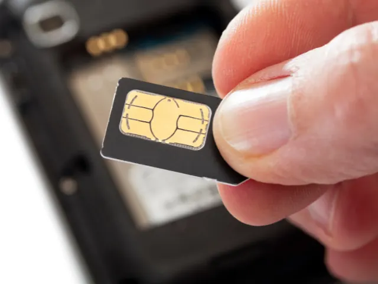

Nieuw in Nijmegen voor studie of werk? Zo start je slim met een prepaid simkaart!
Gepubliceerd op 15 oktober 2025, bijgewerkt op 13 januari 2026
Onderdeel van de gids Studeren in Nijmegen

Ga je binnenkort in Nijmegen wonen voor je studie of een nieuwe baan? Spannend! De oudste stad van Nederland heeft veel te bieden: sfeervolle straatjes, gezellige cafés en natuurlijk de Waal als perfecte plek om te ontspannen. Maar voordat je je echt thuis voelt, wil je natuurlijk goed bereikbaar zijn, of het nu is voor je medestudenten, je werkgever of familie thuis. En dat begint met een slimme keuze: een prepaid simkaart of prepaid eSIM.
Waarom prepaid handig is als starter in Nijmegen
Als je net begint aan een nieuwe fase in een andere stad, is flexibiliteit belangrijk. Je weet vaak nog niet precies hoeveel data je verbruikt, of welk abonnement het beste bij je past. Met een prepaid simkaart hoef je dat ook niet meteen te beslissen. Je zit nergens aan vast en kunt je tegoed gewoon opwaarderen wanneer jij wilt.
Dat betekent: geen vaste maandlasten, geen contract en volledige controle over je kosten. Gebruik je een maand wat meer data omdat je veel onderweg bent of online colleges volgt? Dan laad je wat extra tegoed op. De maand erna kun je het juist rustig aan doen. Voor studenten en starters die hun budget goed willen beheren, is dat ideaal.
Prepaid eSIM: direct online zonder kaartje
Steeds meer moderne telefoons ondersteunen een prepaid eSIM, een digitale versie van de gewone simkaart. Dat betekent dat je niet meer hoeft te wachten op een plastic kaartje of hoeft te prutsen met een pinnetje om je simslot open te krijgen.
Bij providers zoals Lycamobile of andere prepaid-aanbieders kun je je eSIM gewoon downloaden en activeren via een QR-code. Binnen een paar minuten ben je online, ideaal als je net in Nijmegen bent aangekomen en meteen je weg wilt vinden naar je studentenkamer of nieuwe werkplek. Een prepaid eSIM is bovendien handig als je al een tweede sim gebruikt, bijvoorbeeld voor je werk. Zo kun je één telefoon houden, maar wel privé en werk gescheiden houden.
Altijd makkelijk op te waarderen
Een ander voordeel van prepaid is het gemak van opwaarderen. In Nijmegen kun je dat op allerlei manieren doen: online via de website van je provider, via hun app of zelfs bij veel lokale winkels en supermarkten. Handig als je onderweg bent of even zonder data zit. Bovendien krijg je bij de meeste providers direct een melding zodra je tegoed bijna op is. Zo kom je nooit voor verrassingen te staan.

Goed bereik in Nijmegen en omgeving
Wat dekking betreft zit je in Nijmegen goed. De stad heeft uitstekende 4G- en 5G-dekking, waardoor je ook op drukke plekken zoals het Keizer Karelplein, het station of de campus van de Radboud Universiteit prima verbinding hebt. Ook buiten de stad, bijvoorbeeld als je in Lent, Beuningen of Groesbeek woont, blijft de verbinding stabiel. Voor wie veel reist tussen werk en studie, is dat een geruststellende gedachte: je kunt altijd navigeren, streamen of bellen zonder haperingen.
Budgetproof en flexibel
Nijmegen staat bekend als een studentenstad met volop sociale activiteiten, maar dat betekent ook dat het slim is om je geld goed in te delen. Een prepaid simkaart helpt je daarbij. Je bepaalt zelf hoeveel je uitgeeft aan data, bellen en sms’en, zonder dat er onverwachte kosten bijkomen. En wil je even zuiniger aan doen? Zet je mobiele data uit wanneer je wifi hebt (bijvoorbeeld in de universiteitsbibliotheek of op kantoor). Zo hoef je minder vaak te opwaarderen en houd je meer over voor leuke dingen in de stad.
Terug naar de beginpagina